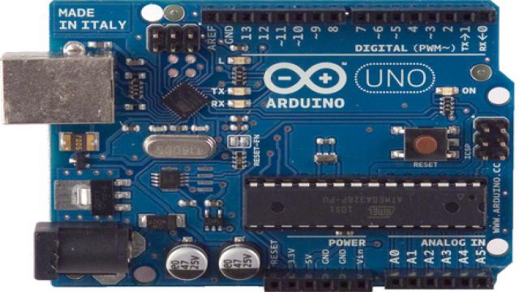
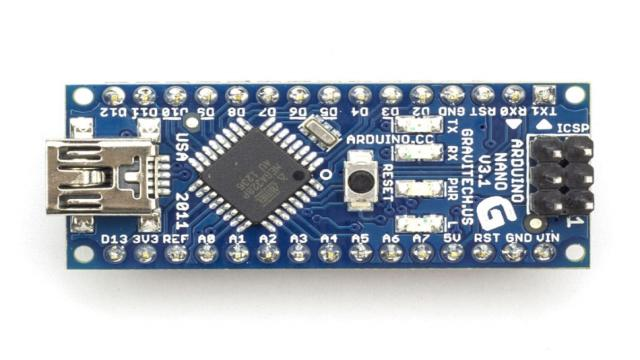
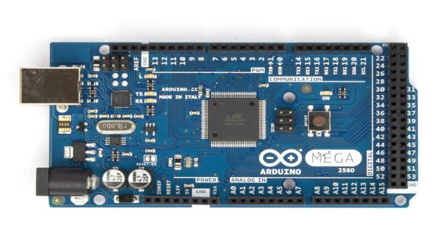
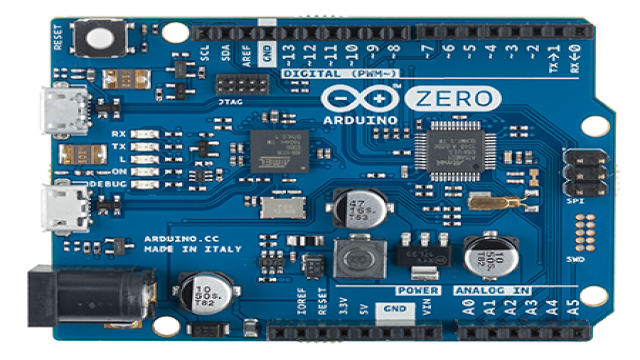
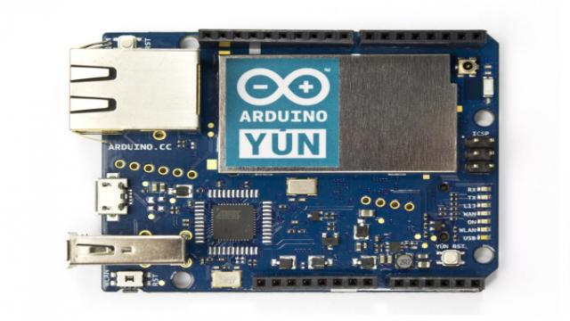
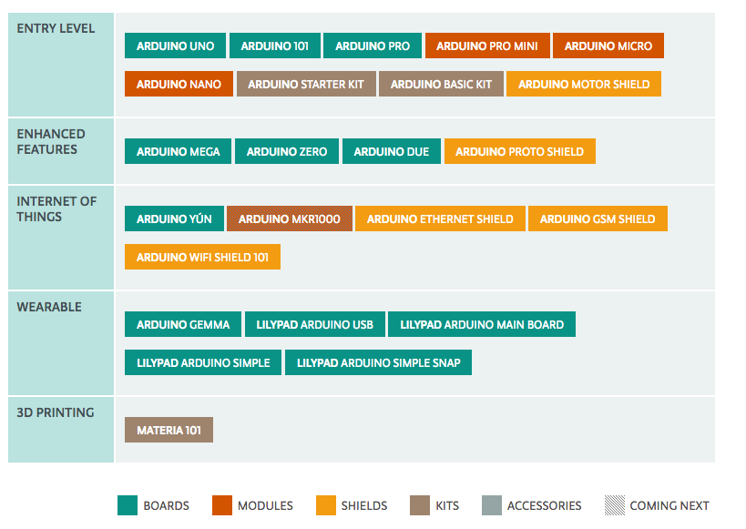

Ardunio
Arduino 是一款比较流行的开源硬件，相对于传统的硬件平台，Arduino所具有的优势就是采用 Creative Commons 许可。 Creative Commons（CC）是为保护开放版权行为而出现的类似GPL的一种许可（license）。在 Creative Commons许 可下，任何人都被允许生产电路板的复制品，还能重新设计，甚至销售原设计的复制品。Ardunio 其实是包含硬件部分（各种型号的Arduino板）和软件部分（Arduino IDE)。
Arduino板
Ardunio 开发板众多，仅主板就有各种系列，还有各种对应扩展板和传感器。Ardunio 基本都是采用 Atmel 公司的16位及32位芯片。下面是几款主要的Ardunio 发板：
Arduino Uno

广受青睐的 Arduino Uno 开发板是以 ATmega328 MCU 控制器为基础。而 ATmega328 是一款低功耗，高性能的 AVR® 8位微处理器，这款芯片采用的是精简指令集计算机（RISC）架构，4/8/16/32K 字节系统内可编程闪存。Arduino Uno 开发板所具有的特性都是来自于 ATmega328 这款芯片。更多特性可以查看 ATmega328官方数据手册。
Arduino Nano

Arduino Nano 是一款基于 ATmega328(Arduino Nano 3.x) 或 ATmega168(Arduino Nano2.x)的开发卡，体积小巧、功能全面且适用于电路板。
Arduino Due

与前两款不同，Arduino Due 是基于 ATSAM3X8EA 芯片。而 ATSAM3X8EA 是32位 ARM Cortex-M3 RISC 处理器，Cortex－M3 处理器采用 ARMv7-M 架构。更多细节可以查看ATSAM3X8EA.
Arduino Mega(2560)

Arduino Mega 采用 ATmega2560 作为核心处理器。ATmega2560 是一款256K字节系统内可编程闪存的微处理器，这里不再做过多介绍，更多内容可以看数据手册
Arduino Zero

Arduino Zero 采用的 SAMD21 作为主控制器，而SAMD21 是32位ARM Cortex M0+ 内核，CortexM0 其核心架构为 ARMv6M，关于 ARM 架构会在 ARM 章节进行讲解。Arduino Zero 是 Atmel 与 Arduino 合作推出 Zero 开发板，它是一款简洁、优雅、功能强大的32位平台扩展板。附上SAMD20手册
Arduino Yún

ArduinoYún的比较独特，采用了 ATmega32U4 处理器，同时还带有 AtherosAR9331（wifi模块），而主芯片则和 Arduino Leonardo 相同。不同的是Yún板具备内置以太网和Wi-Fi支持器，Yún还可以与板上Linux分配通信，Arduino带来了功能强大的联网计算机。
 以上是 Ardunio 的系列产品，除此之外还有很多已经废弃的产品，更多 Ardunio 产品看查看Arduino Products
Ardunio IDE
Ardunio IDE 同时支持 windows、linux、mac 三种平台，适用于任何 Ardunio 板。具体安装和使用方法可以参照官方Getting Started with Arduino， Ardunio IDE 提供了自己特有的语法.很多人喜欢用 Sublime Text ，没有关系，安装 Ardunio 的插件，和 Ardunio IDE 具有的功能类似。以下是 Ardunio IDE 的界面：